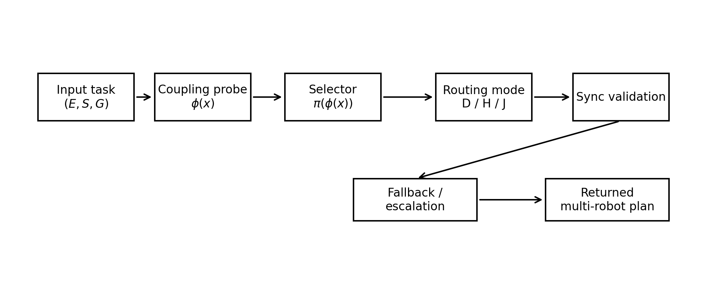

|
Rahul Vimalkanth I am a pre-final year undergraduate student in Electrical Engineering at IIT Madras. My research interests lie at the intersection of embodied AI, robot learning, computer vision, and neurosymbolic reasoning, with a broader goal of building intelligent systems that can perceive, reason, and act reliably in the physical world. I will be joining Adobe as an upcoming Product Intern, where I will work on neurosymbolic recommendation systems. At IIT Madras, I am a Young Research Fellow working on efficient vision models for industrial anomaly detection in collaboration with KLA Corporation, advised by Prof. Kaushik Mitra. I also work with Prof. Sourav Garg at the Robotics Research Center, IIIT Hyderabad, where I study visuomotor policies for embodied navigation. Previously, I worked on robot perception and dynamic scene understanding at the Robert Bosch Centre for Cyber-Physical Systems, IISc Bangalore. |
{kind=link}
Research InterestsI am broadly interested in how embodied agents can learn useful representations from perception, adapt across changing environments, and make reliable decisions under real-world uncertainty. My current interests include robot learning, visual navigation, visuomotor control, world models, long-horizon manipulation, and efficient models for real-world deployment. |
Research |
|
 |
Coupling-Aware Planner Exploration for Shared-Workspace Multi-Manipulator Motion Planning
Rahul Vimalkanth ICRA 2026 Workshop on Xplore: Exploration in Robotics, 2026 A coupling-aware planner selection study for shared-workspace multi-manipulator motion planning. The work examines when to rely on decoupled, hybrid, or joint-space planning under interaction uncertainty. |

|
Enhancing Financial RAG with Agentic AI and Multi-HyDE: A Novel Approach to Knowledge Retrieval and Hallucination Reduction
A.G. Srinivasan, R.J. George, J.K. Joe, H. Kant, H. M R, S. Sundar, S. Suresh, Rahul Vimalkanth, Vijayavallabh EMNLP 2025 Workshop on Financial Technology and Natural Language Processing, 2025 arXiv An agentic retrieval-augmented generation framework using Multi-HyDE and state machines for financial question answering. |
|
Website template from Jon Barron. |